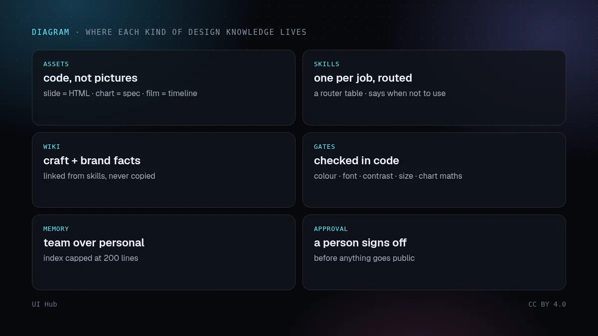
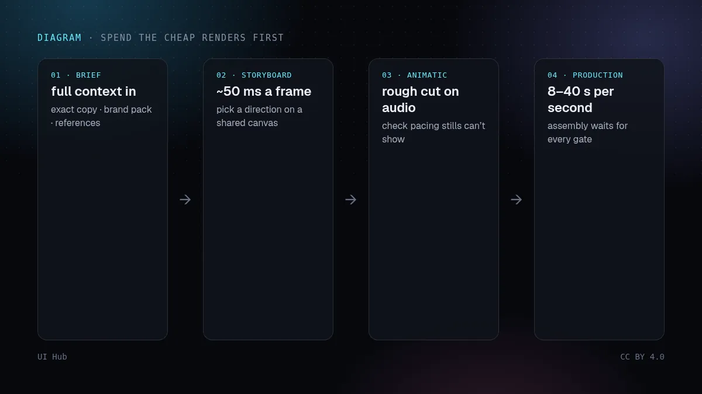

LangChain 的设计智能体 Content Studio 已经以 langchain-ai/design-agent 的名字、按 Apache 2.0 许可开源。仓库 10 月就随一篇很长的构建复盘出现了，本周 LangChain 又重点推了一次：11 月 23 日 README 加上了发布视频，公司在 X 上再次转发项目（“错过了的话：它是开源的”），Geeky Gadgets 也在 11 月 25 日做了报道。它是一个 Slack 智能体：有人在讨论串里 @ 它，附上需求和素材，成品文件就回到同一个讨论串里。LangChain 称它自 8 月以来已产出 3000 多份素材，其中包括 80 多套幻灯片；如今四分之三的请求来自市场部以外；单次请求的模型花费中位数约 0.5 美元，9 月中旬还是约 8 美元。
GitHub 上的 langchain-ai/design-agent 仓库，即以 Apache 2.0 许可开源的 Content Studio 设计智能体 · 截图：GitHub · LangChain（github.com ），2026-11-26 截取，版权归原站所有 这些数字来自 LangChain 自己，可当作一家之言。真正值得研究的是它的结构，因为它回答了很多团队写完第一个“品牌技能”后都会碰到的问题：智能体明明知道我们的颜色和字体，为什么做出来的东西还是跟别人家的差不多？LangChain 把同一条提示分别交给装了品牌技能的本地编程智能体和 Content Studio。前者把 Logo 组合、字体和主色都弄错了。差别不在模型，而在需求里有多少决定要智能体自己补，以及它拿什么来补。
仓库里有什么
每份素材都是代码。 一张幻灯片是一个 HTML 页面，一张图表是一份数据规格，一段视频是一条动画时间轴。每个 Slack 讨论串都有自己的沙箱（一台装了 Chrome、FFmpeg、HyperFrames、D2 和品牌字体的 Linux 机器），需求、计划、场景代码、音频和渲染结果都放在同一个项目文件夹里。把某个元素提前出场，只是改一个数值再渲染一次，而不是重新生成。四类知识，分开存放。 技能讲某一种具体任务怎么做；一个路由技能基本就是一张表，把每类请求对应到一条工作流，并把小修改挡在大流程之外。知识库存放设计手艺和品牌事实，技能链接过去而不是复制一份。凡是能量化的都做成关卡，也就是写在代码里的确定性检查：颜色、字体、对比度、尺寸和图表计算在每次渲染时都会检查。记忆则保存大家教给它的东西。两层记忆。 “领英上永远不用橙色”这样的规则会在当轮就存下来，存进团队记忆或某个人的个人记忆，团队标准优先。每层都有一个每次运行都会加载的索引；早期版本膨胀到 50 万 token 后，LangChain 把它限制在 200 行。每次任务结束后，learn_from_job 会针对所用技能写下最多五条有证据支撑的心得，后续任务再给这些心得打分。先便宜，后昂贵。 一帧分镜渲染约 50 毫秒，成片每一秒要 8 到 40 秒。所以视频按分镜、动态预演、正式制作的顺序走。智能体有时为了省时间跳过审核，LangChain 就把顺序写进了代码：所有部分都通过审核后才会合成。直接指出来，而不是用文字描述。 Slack 讨论串是线性的，分镜却是空间的，所以智能体通过 Paper 的 MCP 服务器在共享的 Paper 画布上出稿，大家可以并排比较方向、在某一帧上评论或者自己动手改。Lovable 在 11 月 23 日把 Paper 加成了聊天连接器，可见这种共享画布的做法正在扩散。长任务也能随时调整。 主智能体把大任务拆给后台子智能体，并在讨论串里持续更新计划、实时状态、花费，发布前还有一步审批。有一个通宵任务给 52 页幻灯片换皮，先做三页样张，再按编号分批送审。
六格网格：素材以代码保存、按任务路由的技能、存放手艺和品牌事实的知识库、每次渲染都运行的确定性关卡、两层记忆，以及发布前的审批步骤 · 示意图：UI Hub 原创，CC BY 4.0 我们的看法：能长久留下来的，是可以检查的规则
LangChain 的复盘里最有用的一句，讲的是东西该放在哪里：必须始终成立的顺序写进代码，判断留在提示里。他们的第一版做法正好相反：做了 115 个可复用组件和大量说明，去弥补模型当时做不到的事，结果品牌是对了，版式却一再重复。模型升级后，他们删掉了大部分硬编码规则，只留下设计原则，产出反而更多样。为弥补模型弱点而写的规则会过期；品牌事实、设计原则和可计数的检查不会。
这给了一个很清楚的标准，可以拿来审视你自己的智能体配置。能计数的规则（这个色值、这个字体、对比度至少 4.5:1、不用首字母大写、坐标轴从零开始），就做成会让渲染失败的关卡。属于事实的（Logo 组合、主色与辅色、语气），放进唯一的品牌包，所有技能都链接它。属于判断的（创意够不够好、信息有没有传达到），就把理由写成带例子的原则，让模型去运用。LangChain 的评测也按这个分法：检查交付的文件、文案是否一字不差、工具调用的顺序，而不让模型来评判品味。
fork 之前也要留意几点。Managed Deep Agents 目前在 LangSmith 上公开测试，第一次构建沙箱要 10 到 15 分钟，完整评测集每个模型约 120 美元，视频依赖 HyperFrames，画布依赖 Paper 桌面版。更大的限制在你的品牌本身。如果你的规范只有一个 Logo 和两个色值，智能体照样会用默认值去补空白。大部分工作其实是把设计师凭直觉做的决定写下来。
照这个思路搭一个设计智能体
为每类素材选一种代码格式。 静态图和幻灯片用 HTML 和 CSS，数据用图表规格，动效用时间轴。不要把一张扁平图片当作母版文件。品牌包只写一份。 Token、字体、带安全距离的 Logo 组合、哪个颜色是主色、语气，再加一份品牌绝不做的事。技能链接它，任何地方都不复制它。把每条能计数的规则变成关卡。 每次渲染后都运行，出错就明确报错。从色板外的颜色、错误字体、对比度、最小字号、画布尺寸和大小写开始。让智能体先看再发。 渲染、查看图片、修正，然后再交付。没被看过的文件不算完成。把小请求引离大流程。 改个尺寸不该触发分镜，发布片也不该跳过分镜。记忆要小，要分层。 团队规则优先于个人偏好，每层一个索引，并定期清掉经不起检验的心得。让反馈可以直接指出来。 用共享画布，至少也要给每帧编号，别让“第二张卡片左边那里”成为主要的反馈方式。
流程：需求，然后是每帧约 50 毫秒的分镜、按音频对时的动态预演，以及每秒成片 8 到 40 秒的正式制作，各阶段之间的审核关卡写在代码里 · 示意图：UI Hub 原创，CC BY 4.0 设计智能体检查清单
每份交付的素材都能作为代码重新打开，改一处再渲染一次就能修改吗？
品牌包是否只有一份，技能都链接它而不是重复它？
颜色、字体、对比度、尺寸和图表计算出错时，渲染会自动失败吗？
智能体发出每次渲染结果之前，都先看过了吗？
昂贵的任务是否先从一份便宜的草稿开始、由人批准，而且这一点写在代码里而不是提示里？
记忆是否分成团队层和个人层，索引有上限吗？
发布前有没有审批步骤，长任务进行中能不能随时调整？
为旧模型写的那些补丁规则，你删掉了吗？ # 贴给编程智能体，并附上我们的品牌手册和官网
把我们的品牌手册变成一个品牌包和一组渲染关卡。
1. brand/tokens.json：带角色的颜色（primary、secondary、surface、ink）、
字体家族和字重、间距阶梯、圆角。
2. brand/brand.md：Logo 组合和安全距离、哪个颜色打头、
五条语气规则，以及一份“绝不”清单。只写事实，不写补丁规则。
3. gates/：每条可计数的规则一个脚本。以下情况判为失败：色板外的颜色、
品牌包以外的字体、文字对比度低于 4.5:1、文字小于 <最小>px、
画布尺寸不对、标题用了首字母大写。
4. 一个渲染步骤：用代码构建素材、截图、运行所有关卡，
并打印每个失败项以及导致它的元素。
列出手册里无法变成事实或检查的内容，
方便设计师把它们写成原则。UI Hub 相关阅读：如何量化 AI 味 、用 lint 让智能体守住设计系统 、要能改的设计稿，而不是图片 ，以及带记忆的设计智能体 。